Coding with AI
Context, workflow, and scientific ownership
Stephen KerrComputational Materials Science · Queen's University
Claude has just been rolled out to the group, so this talk is Claude-centred, but the
ideas are agentic-coding ideas: they should survive a change of tools. Three things I
want you to leave with, in priority order: how to manage an agentic coding workflow,
how to manage context inside that workflow, and why you, not the agent, must keep
ownership of the work and its scientific meaning.
(Subtitle is provisional; final wording after rehearsal, per FOUNDATION.md.)
1 · From chat to agentic coding
“I need to wash my car, the carwash is 10 m away should I walk or drive?”
This is the exact prompt, unedited, punctuation and all. Read it to the room, then ask
for hands: who walks? Who drives? Let people commit before anything resolves. Most of a
room picks walk; ten metres is nothing. Do not hint at the trap. The next slide shows
what one model did with it.
1 · From chat to agentic coding
Walk or drive?
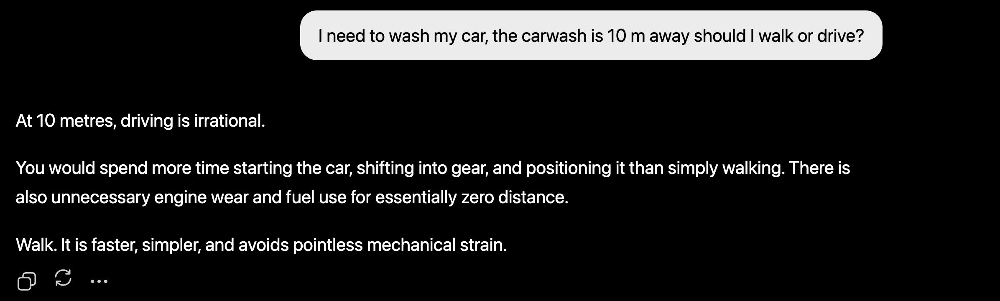
ChatGPT 5.3 Instant · 2026-07-13 · one observed response
The car has to arrive at the wash.
Put yourself inside this question. The car wash is ten metres away. The model answers
the question it recognizes: a distance and transport question. Fluent, confident,
locally sensible. And it has dropped the entire purpose of the trip. (Let the room
say it before the reveal.)
This is one observed response from one model on one day, not a leaderboard and not a
claim that this model always fails.
The coding version of this prompt is "implement my new idea in this codebase": the
agent can hand back plausible code while silently inventing the architecture,
constraints, and definition of done that I never stated. Hold that thought; the whole
middle of this talk is about surfacing hidden intent before implementation.
(Down: what the same prompt did across other models and modes.)
Walk… unless
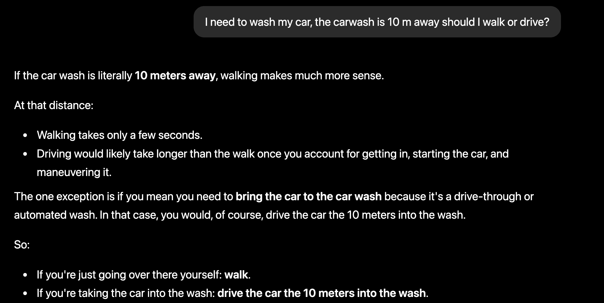
ChatGPT 5.5 Instant · 2026-07-13 · one observed response
Same prompt, same day, different session. Walk again, but this time the hidden goal
surfaces, and look where: inside the one exception. "If you mean you need to bring
the car to the car wash… you would, of course, drive." The purpose of the trip
appears as a footnote to the answer the model recognized.
I cannot tell you why this response recovered the goal: familiarity with a famous
puzzle, routing, a safeguard. The output alone does not say, and I will not guess
from a screenshot.
(Down: the summary of what the same question did across models and modes.)
Same prompt, different answers
The same 10 m question, other models and modes (July 2026):
Response What it did ChatGPT 5.3 Instant Walk. The purpose never surfaces. (shown live) ChatGPT 5.4 Pro Drive: the car must reach the wash. ChatGPT 5.5 Instant Walk first, then the exception recognizing the car has to be brought in. (shown above) Claude Haiku 4.5 Walk. Claude Sonnet 5 Low Walk. Claude Opus Low Drive.
One correct answer to a familiar trap is not evidence the model will recover the hidden purpose of a novel request.
The outputs differ across models and modes; that much the screenshots establish. The
Opus Low run is from my own logs rather than a screenshot. What none of this
establishes is why: fresh inference, familiarity with a common puzzle, routing, or a
curated safeguard. I cannot infer the production mechanism from an output, and
neither can you. That uncertainty is the useful part: a right answer to a famous trap
tells me very little about a novel, underspecified coding request.
1 · From chat to agentic coding
Inside the codebase
Web chat
Works from the context I give it. It sees the fragments I paste or upload, and nothing else.
Agentic coding
Works inside the codebase. It goes looking for the files and relationships the task needs, within the access it has been granted.
An LLM working in my codebase, sussing out where things are for itself. CLI or app: the interface is not what makes it agentic.
My working definition: agentic coding is when I have an LLM working inside my
codebase. It can look through the files and suss out where things are, instead of
only seeing what I upload to a web chat. It can live in a CLI or in an app; the
interface is not the point.
Two qualifications. "Within the access it has been granted": the agent does not have
unrestricted access to everything, and not every file lands in the context window at
once. It can go looking, rather than waiting for me to supply each file.
Inspect, act, observe, adapt is a fair description of how such an agent behaves once
it is in there, but it is behaviour, not the definitional test.
If Q&A pushes on read-only products: Cursor's Ask mode and Copilot's Ask mode are
system configurations of the same idea, not a different kind of model. Not worth the
live path.
(Down: the section's vocabulary.)
Vocabulary: agentic coding
Term In this talk agentic coding An LLM working inside the codebase, finding relevant context for itself. situated access The agent inspects the repository, bounded by the access it was granted. inspect · act · observe · adapt How a coding agent behaves once it can see the work. A description, not the boundary. web chat Works only from what you paste in. Capable, but context-blind.
Each section ends with its working vocabulary, so we share words for Q&A and for
your own reading afterward. These glosses are how I use the terms; the wider
community has not settled on definitions, which is a theme we will return to.
2 · Tokens and context
What is a token?
The smallest bit of information the model works with.
A node connected to the other tokens in the window.
Its working meaning comes from those connections.
A token is the smallest unit the model actually reads and writes. Not a character, not
reliably a whole word: a chunk. I picture each token as a node carrying a vector. It
starts from a general representation, and its working meaning comes from the other
tokens it can attend to in the window. When I want the chunks to feel concrete I call
tokens objects instead of nodes; both are teaching metaphors, not literal claims about
the architecture.
2 · Tokens and context
Same token ID, different meaning
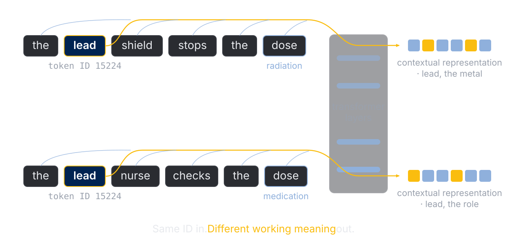
The token ID is fixed. The representation carried at its position becomes contextual .
Follow one word through the stack. The same integer ID enters both sentences, and as it
passes through the transformer layers its representation is repeatedly reshaped by the
other positions it can attend to. By the output, lead means the metal in one sentence
and the senior role in the other. And notice the second flip: dose is a radiation dose
beside a shield and a medication dose beside a nurse. The neighbours decide.
Aside for this room: had I written Pb instead of lead, that is a different token ID
entirely, yet in this sentence it would converge to the same working meaning, the
metal. Same ID diverges; different IDs converge. The meaning lives in the contextual
representation, not in the integer.
The integer ID never changes; the state carried at that position does. So context is
not merely text sitting near a token: it helps give that particular occurrence its
working meaning. The context window, then, is not just storage. What is in it shapes
how every position is represented and how the next token is predicted. That is why the
rest of this talk cares so much about what we let into it.
2 · Tokens and context
How many r's in strawberry?
strawberry
A direct count asks the model to work below its own units: it sees chunks, not letters.
s t r a w b e r r y
When a model struggles: change the representation , expose intermediate steps, or give it a tool.
The point is not that the model cannot count letters. The direct question can ask it to
operate at an awkward representation level. If I first ask it to spell the word one
letter at a time, the characters become explicit intermediate state, and counting the
r's becomes easy to perform and easy to verify.
The general lesson: when a model struggles, do not just repeat the question louder.
Change the representation, expose the intermediate steps, or hand it a suitable tool.
Exact tokenization is tokenizer-dependent; I make no claim about how many tokens
"strawberry" is on any given model. Related aside if useful: a word and its plural
suffix can be separate objects, so "pencil" to "pencils" can be one object becoming
several. The split is not the lesson; the mismatch between model units and human units
is.
2 · Tokens and context
Keep context small and relevant
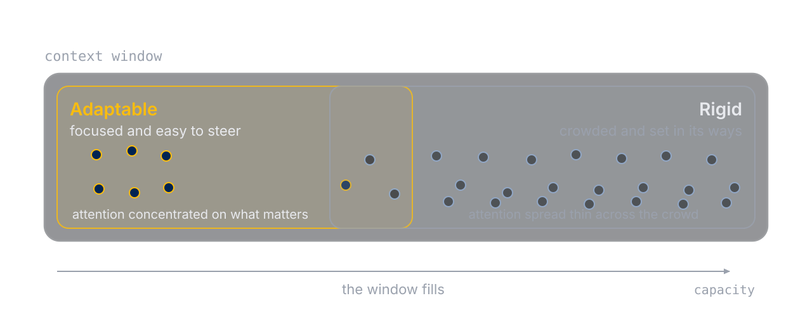
A million-token window is capacity, not a target.
A fresh, focused coding chat is easy to steer. As it fills with abandoned ideas,
stale assumptions, old tool output, and directions I no longer want, it starts to get
set in its ways. That is what I mean by rigid.
On the figure: the zones overlap because there is no sharp line. As the window fills,
attention has to spread across everything present, so each token's influence thins
and new tokens are steered by a lot of stale context. Informally: the left is the
smart zone, the right is the dumb zone; the honest labels are adaptable and rigid.
The spoken line: a million-token window is capacity, not a target. Just because
Claude can hold that much does not mean I want every abandoned idea and stale
decision following me through one coding chat.
Qualifications: the million tokens is model-dependent and will date; this is a
practical heuristic about session behaviour, not a claim that the weights change
mid-chat; the zones are a cartoon, with no fixed fill fraction where behaviour
flips; and large, deliberately assembled contexts are genuinely valuable for
reference and synthesis work. The advice is against accidental growth.
Bridge to the next section: a fluent answer can satisfy the visible request while
missing the goal behind it. So before implementation, we make the goal, constraints,
assumptions, and definition of done explicit. That is the workflow.
(Down: watch the window fill, three stages; then vocabulary.)
A fresh chat: small and targeted
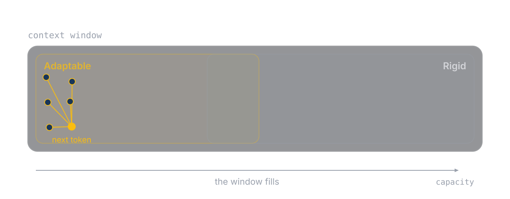
Read this as a fresh chat. A handful of tokens, and the position writing the next
token can attend firmly to every one of them. The connections are few and strong.
This is the adaptable end: small and targeted, easy to steer.
The chat grows
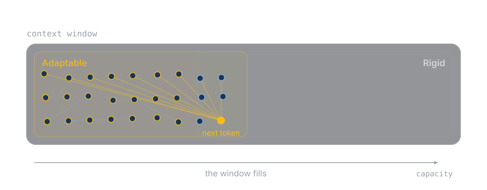
Same window, more turns: side questions, old tool output, ideas we abandoned. Every
new token attends over everything already present, so the web of connections grows
and each line starts to thin. We are in the overlap now: still workable, but
steering takes more effort.
Near capacity: attention spread thin
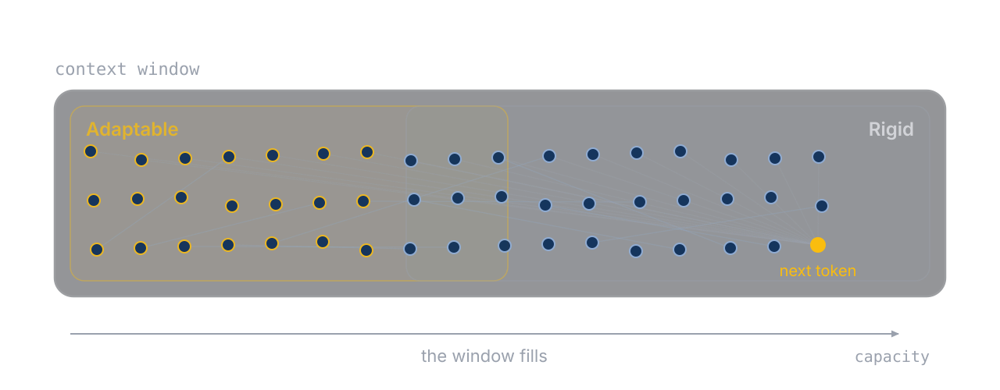
A model's best work happens when the context is small and targeted .
Near capacity. The newest position's attention is spread across everything:
abandoned ideas, stale assumptions, dead ends. Each connection carries less, and the
next token is steered by a lot of history I no longer want. That is rigid.
The lesson: a model's best work happens when the context is small and targeted. So I
start new chats deliberately instead of letting one grow.
Cartoon, not mechanism: same hedges as the parent slide; there is no fixed fill
fraction where behaviour flips.
(Down: vocabulary.)
Vocabulary: tokens and context
Term In this talk token The smallest bit of information the model works with. A node whose working meaning comes from its connections. token ID The fixed integer produced by tokenization. It is not what changes. contextual representation The vector carried at a position after the layers mix in permitted context. Two identical IDs can diverge. context window The model's finite working set. Select what should shape the next answer; do not fill it. adaptable / rigid My labels for session quality: focused and steerable, versus crowded and set in its ways. /btw side question A question answered beside the chat: it sees the conversation, but the answer never enters the window.
Contextual representation is the one technical takeaway I insist on: it explains why
context management is not housekeeping but part of how the model computes.
2 · Tokens and context
Do not be afraid to start a new chat
New chat
A fresh, focused window. Steering is easiest before the crowd moves in.
/btw side questions
Answered in an overlay: it sees the whole chat, but the answer never enters the window.
Carrying the thread into the new chat is a handoff. Section 3.
When the window gets crowded, I do not push through; I start a new chat. That sounds
wasteful until you remember the pictures we just saw: the best work happens when the
context is small and targeted. New chats are cheap; a crowded window is not.
The second tool: side questions. In Claude Code I type /btw and ask. The answer comes
back in an overlay. It can see the whole conversation, so the answer is grounded, but
it has no tools and the exchange never enters the conversation history, so it costs
the window nothing. If a side question grows into real work, one key turns it into its
own session.
How I use it: clarifying something we already did; brainstorming whether a repeated
prompt deserves to become a Skill; asking about the page I am hosting locally while
the main turn keeps running; and in an interview session, clarifying a recommendation
before I lock a decision. When I am about to write a document that will steer a lot of
budget, I want wording help with follow-up turns, so that one I fork into a fresh
session instead.
Bridge: what the new chat needs from the old one is the thread, meaning what we
decided and why. Moving that across deliberately is a handoff, and handoffs are
section 3.
(Down: setting up a workspace that keeps context small.)
A workspace the agent can navigate
One of everything
A single script that does it all. Documentation in one huge file no window can hold.
Navigable pieces
Small modules with clear docs. Documents link to documents; the agent loads only what the task needs.
Structure the workspace so any one task fits a small window.
Once agentic coding clicks, you start setting up your workspace for it. One huge
Python file that does everything is much less useful than a small module pulling in
pieces from others: the smaller chunks are easier for the agent to work on, as long
as the documentation is clear. The documentation matters just as much. Documents
should link to documents, so when the agent needs to know how one part of the code
works it follows the tree down to the right page instead of grepping through a
document larger than any context window.
This is also just good software practice for humans; the agent makes the payoff
immediate. Seed for later: section 4 applies the same discipline to prompts,
maintaining Skills as navigable, documented assets.
3 · How I code with an agent
I was the context manager
A grad-course analysis, redone with an LLM: the output file swamped the chat
It worked only once I gave it a procedure:
grep the lines that matter → write them to a small file → analyse that → report back
I was doing a subagent's job by hand.
Before agentic tools existed, I was the context manager. In a graduate computational
course, after I had done the data analysis myself, I tried to get ChatGPT to do the
same work. On its own it was terrible: the output file was enormous and it could not
parse it. It only worked once I gave it a procedure: grep for the lines that mattered,
write them into a new file, and then work on that small file to report the relevant
information. I was doing exactly what a subagent does now: go into a separate context,
extract the relevant part, and report a distillation back to the main conversation.
The same period taught me the other half. Before the CLI tools I copy-pasted
hand-picked context into chat windows, and when Projects arrived, uploading a pile of
files did not make the results better. You have to think about how information is
organized for a language model. Keeping a tidy space with good documentation is
critical if an LLM is going to do good work in your codebase.
The bridge into the rest of this section, spoken: this whole section is that same
discipline, with names and tools attached.
3 · How I code with an agent
Skill: interview-design-decisions
Expose the decisions
The first job is not to generate code
The agent interviews me: one consequential choice at a time
It proposes options and recommends one
I lock in the load-bearing decisions
Surface the decisions the agent would otherwise guess.
I do not want the agent to make a chain of quiet design choices and hand me the
endpoint. I want it to interrogate me about the consequential choices, explain what
each option changes, and let me lock them in one at a time. Then the implementation
follows decisions I can still explain and defend.
The stop condition for this interview, spoken in full: we start implementation only
when I can explain the proposed path and its trade-offs, the agent can restate my goal
and constraints, the evidence and definition of done are testable, and every
load-bearing decision is one I knowingly made. Shared understanding, not a longer
prompt.
3 · How I code with an agent
Skill: build-design-foundation
FOUNDATION.md: a context start
The distillation, not the transcript
Goal · glossary · locked decisions and why · boundaries · evidence · definition of done
A new session loads the agreed design directly
Do not depend on automatic compaction for durable design. Commit the north star to a file.
This presentation was built exactly this way.
We have just done valuable work scoping the problem: a north star for an iterative
coding agent, the decisions I made, the boundaries, and the evidence that will tell us
whether it worked. I do not want that value trapped in one context window. So I commit
the distillation, not the transcript, to a Markdown file. That file is a context start:
a new chat loads the agreed design directly instead of inheriting a lossy automatic
compaction of the conversation that produced it.
Qualifications: the file does not remove context limits or compaction; it removes the
dependence on compaction for durable knowledge. A future agent still has to load it,
and a stale foundation is not authoritative just because it was committed. My Skill for
this updates the file as each decision lands and re-runs against an existing foundation
to sharpen it rather than clobber it.
And the line on the slide is literal: this presentation was scoped and built exactly
this way, interview first, foundation committed, sections built against it. The
interview gave me space to type and think about each part. Having an LLM ask me what
the takeaways are, and what was impactful to me, helped me decide what I wanted this
to become as a presentation. The foundation file for this talk lives in its folder in
the public repository, if anyone wants to see the real thing.
3 · How I code with an agent
Skill: to-spec
Scale the process to the work
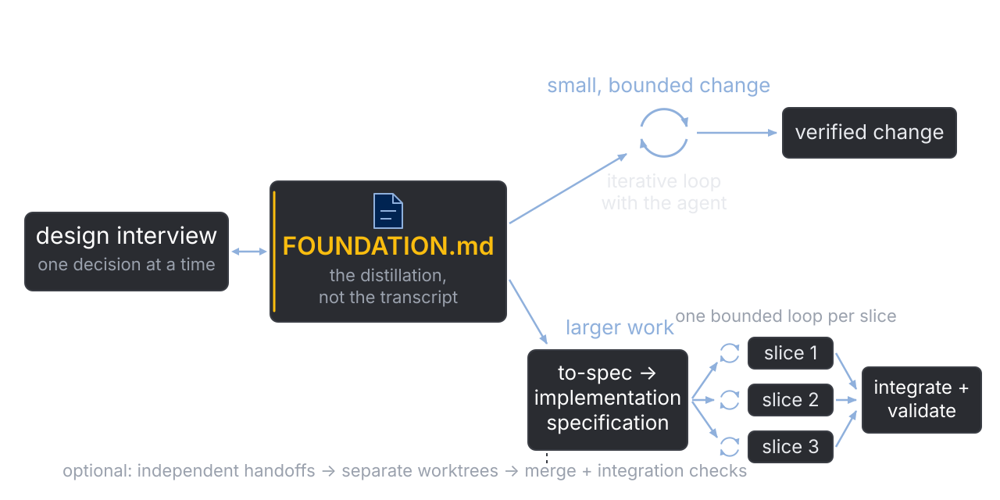
Every step hands the next agent a smaller, sharper context .
I do not create a procession of documents for every code edit. If the work is small
and bounded, the foundation is enough to begin an iterative loop with the agent. If
the work has several independent outcomes, I translate the foundation into an
implementation specification, and slice that into pieces that can each be built and
verified on their own. The amount of process should scale with the cost of getting
lost.
Naming: I inherited the name to-prd for the synthesis step, but I am not producing
product paperwork; I call it to-spec, and the artifact is an implementation
specification, or a study or method specification when the deliverable is a
simulation campaign. It packages decisions already made; it does not reopen the
interview.
Context narrows along the larger path: the foundation holds the durable design, the
spec describes the complete agreed end state, a handoff carries the exact context for
one bounded task, and one agent executes and verifies it.
(Down: the autonomous extreme of this path.)
Ralph: the blunt end of the loop
while ! ./slices-done.sh; do
claude -p "Read SPEC.md and PROGRESS.md.
Take the next unfinished slice.
Implement it, run its checks,
update PROGRESS.md."
done
Every lap starts with an empty context: the files are the memory
Only works because the artifacts exist: durable spec, bounded slices, observable checks
Autonomy is earned by the artifacts , not by the loop.
The community calls this pattern Ralph: the dumbest possible loop, re-dispatching a
fresh context against the same specification until the work is done. Every lap is a
fresh, eager intern with no memory of the last lap. No orchestration framework, no
memory beyond the repository itself. I keep it here as the limiting
case: everything this section teaches (a durable spec, independently verifiable
slices, checks an agent can run) is exactly what lets something this blunt work at
all. It is an experiment I run on bounded work, not doctrine.
3 · How I code with an agent
One slice, one owned decision
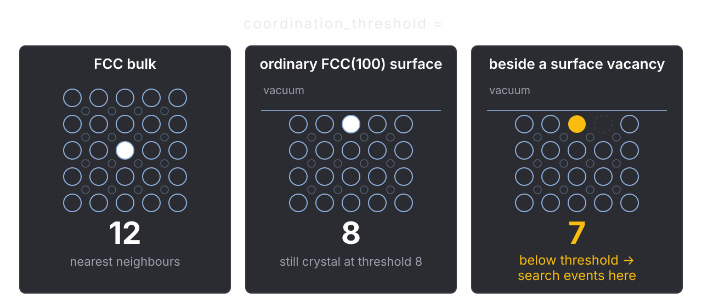
A specification does not make the scientific decision. It preserves it, and turns it into explicit, testable behaviour.
A vertical slice is a narrow but complete capability: it crosses every layer it touches
and produces something I can verify on its own. Not "one issue for the data structure,
one for the algorithm, one for the tests"; the thinnest complete path through the
scientific behaviour.
The real example: for a surface problem I cared about the surface, not the bulk, so I
wanted pyKMC's event searches to focus on the environments that mattered. Coordination
number gave me the handle. An FCC bulk atom has twelve nearest neighbours; an ordinary
FCC(100) surface atom has eight; an atom beside a surface vacancy has seven. With the
threshold at eight, ordinary surface stays crystal and the vacancy-adjacent
environments get the new event searches.
The threshold of eight comes from my understanding of this surface, and it is
specific to this facet, not a universal law. The agent's job was to surface the choice,
make it configurable, wire it through every construction site, and help test it. The
deciding and the defending stayed with me.
This feature is public: pyKMC pull request 91, one complete slice from configuration
through classification, dispatch, tests, and documentation, with colouring deliberately
left to the companion pull request 90. On a 9,679-atom Ni95Cr5 slab, threshold 12
reproduced CNA's 971 non-crystalline atoms exactly; threshold 8 selected a strict
four-atom subset. The slab input itself is not public, so the public checks are the
reproducible part. And to be honest about history: this predates my to-spec Skill; it
is the example I now map onto that workflow, not a product of it.
3 · How I code with an agent
Do not fix what you cannot reproduce
First: one command that fails on the exact symptom
Minimise it; keep it as a regression test at the right seam
Only then: the smallest fix, and the same evidence turns green
Re-run the original scenario
The agent must prove it sees the same bug I see.
I do not begin by telling the LLM to fix the bug. First I make it prove that it can see
the same bug I can see. We build a command or test that fails for the right reason,
reduce it until the failure is clear, and keep that case as a regression test. Only
then do we change the implementation and watch the same evidence go from red to green.
Otherwise the agent can produce a plausible change without proving it touched the
problem I reported. A nearby failing test that demonstrates a different failure does
not count; the agent should not form a confident theory before it has executable
evidence.
Slices and reproducers are cousins: a slice bounds new work by a verifiable capability,
a reproducer bounds bug work by an executable failure. Both keep the agent from working
against an unobservable goal.
3 · How I code with an agent
Handoff: compaction with intention
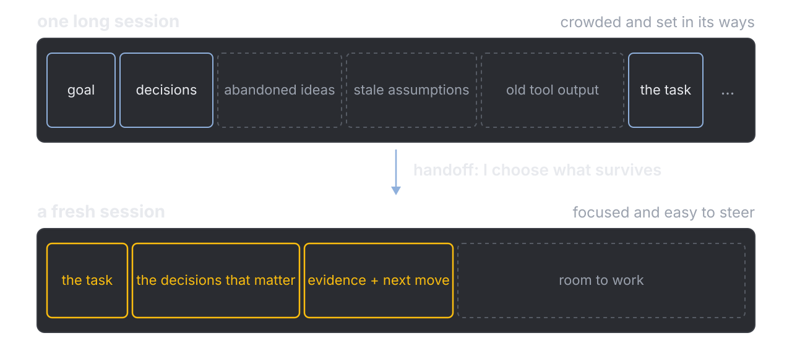
One bounded task, only the context needed to complete it.
Handoff is compaction with intention. Both halves matter: I decide what survives into
the next context, and what survives is shaped around one bounded direction of work.
Why the window itself matters: section two's point, replayed for coding. A long
session accumulates abandoned ideas, stale assumptions, and old tool output alongside
the goal and the decisions. The window gets crowded and set in its ways, and the task
competes with noise for attention. More space does not fix that; selection does.
A handoff lets me curate a context window for a new session: the task, the decisions
that matter, the evidence and the next move, and nothing else. The new window starts
focused and easy to steer, with room to work.
The contrast with the foundation file: FOUNDATION.md is durable and shared across
future work; a handoff is disposable, promoted into durable artifacts and then
thrown away.
(Down: automatic compaction vs handoff; one real handoff; what a handoff carries;
worktrees.)
Automatic compaction vs handoff
automatic compaction
fires when the window is already full
a summary nobody curated
can silently drop a locked decision
what was lost is invisible
handoff
happens when I choose
carries what the next task needs
decisions survive because I put them there
a file I can read and audit
Both compress the conversation. Only one is intentional .
Automatic compaction is a safety net, and an honest one: when the window fills, the
harness summarizes the conversation so work can continue. My problem is not that it
exists; it is that the summary is lossy in ways I do not control and cannot easily
audit. It fires at an arbitrary moment, it can drop a decision I locked or evidence
I need, and I only discover the loss later, when the agent stops acting like we ever
agreed on anything.
A handoff is the same compression done on purpose: I choose the moment, I choose
what survives, and the result is a file I can read before I spend it. The quieter
use: when a good conversation has grown large and stale, a curated handoff continues
the same work in a clean window instead of letting automatic compaction decide what
mattered. Same rule as the foundation file: do not depend on automatic compaction
for anything durable.
One handoff, in practice: a diverged pyKMC bug
A pyKMC bug was already fixed, but on a heavily refactored branch
The fix could not be transplanted into develop: different seams
carried: the bug, narrowly stated
Carry the problem, evidence, and clues across the boundary, not an obsolete solution .
The story: the same first-step KeyError was first fixed on a refactored
basin-hardening branch. That implementation could not simply be moved onto develop;
the two branches migrate state at different seams. So I wrote a handoff for a fresh
session against develop carrying the narrowly stated bug, the requirement to produce
a failing test first, clues from the refactored-branch solution, and the constraint
that develop needed a small native fix, not the larger refactor. The receiving
session produced the native fix, the focused regression, and the merge. Public
history verifies the two divergent fixes, the regression, and the merge (pyKMC pull
request 86; commits d493f8a and 817524e; the earlier branch fix is 9dba577). The
disposable handoff connecting them is my account; it was never committed.
(Down: what a handoff carries; worktrees.)
What a handoff carries depends on where it is going
Direction Might carry Continue the same work current state · settled decisions · useful evidence · next move Break in a new direction relevant premise · divergence point · local boundary · open question Execute one spec slice pointer to the spec · slice scope · starting state · verification target Separate worktree branch pointer · integration boundary · relevant checks
Examples, not required boxes. I choose what the next context needs.
I do not want the handoff to carry the whole idea just because the previous chat
needed it; I want it to carry what is relevant to the direction I am breaking into.
Sometimes a goal and a next action, sometimes a pointer to a spec, a failing test, a
decision, an observed result. The stable criterion: the receiver gets the context
relevant to its direction without being burdened by the whole parent conversation.
Parallel work: handoffs + worktrees
same task: stale context → curated handoff → fresh chat, same code state
A handoff scopes the context ; a worktree isolates the code state . Neither makes integration automatic.
A new chat gives me clean conversational context; a worktree gives me a separate
checkout with its own branch. They solve different problems. Continuing one
overloaded conversation may only need the handoff. Dispatching independent coding
work wants both: a bounded brief and an isolated branch. A handoff does not merge
code, a worktree does not transfer understanding, and neither makes integration
conflicts disappear.
3 · How I code with an agent
Vocabulary: the workflow
Term In this talk design foundation Durable Markdown distillation of the agreed design. A context start for future sessions. implementation spec The agreed end state packaged for execution. Study or method spec for simulation campaigns. vertical slice A narrow, complete capability, independently verifiable. A file or layer is not a slice. red-capable reproducer One runnable command that fails on the exact reported symptom, then passes after the fix. handoff Compaction with intention: one bounded task, only the context needed to complete it. automatic compaction The safety net when the window fills: a summary nobody curated. Do not depend on it for durable design. worktree An isolated checkout. Separates code state, not conversational context.
Seven terms that carry this whole section. If you keep only one, keep handoff: it is
the one that changes daily behaviour first.
4 · Skills as maintained assets
A prompt earns its packaging
A discipline I repeat, preserved as a Skill
Exposed only to the chats where it is relevant
Observed for drift; revised or removed when it stops helping
Not only coding: one Skill adversarially reviews my statistical claims before I draft prose
Not something to collect. Something to maintain.
A Skill is a packaged, reusable procedure with an invocation mechanism. Mine mostly
began as prompts I kept refining until they stabilized. The bar before packaging: the
need recurs, the trigger is recognizable, the procedure is reusable, and I can tell
whether it did the job. One-off advice and vague preferences do not clear that bar,
even written down twice.
The origin story, from Lauren's computational materials course, before any of these
tools had agency: we tried ChatGPT on course tasks and it failed often until the
question was asked the right way. Quantum ESPRESSO output files are huge, and at the
time the model could not reliably extract the total energy from one; asked plainly,
it would grab a few energy values from somewhere in the pasted file. It produced the
right answer only when I specified the method: grep the energy lines, print that
list, sort it, and check the count against a direct grep. At the time, I guess I was
the agent for the LLM. I could only steer it because I already knew how to get the
answer. Then I turned the working recipe into a prompt and a script, and my own data
processing got faster. That is the life cycle this whole section is about: a method
that worked, repeated, hardened, packaged.
Evaluation at our scale is proportional observation, not an A/B laboratory: does the
agent follow the discipline more consistently, does the output get easier to verify,
and what new friction appears? Revise, narrow, or remove accordingly.
And Skills drift. They are reusable prompts, and the arrangement that performed best
a few months ago is not guaranteed to be what performs best now, as the models and my
own practice change. That is why observation is part of owning one.
The non-coding example: before I draft conclusions in a paper, a Skill walks my
claims adversarially, estimation, assumptions, magnitude, uncertainty, causality,
robustness, and the exact language the analysis licenses. Proof that a Skill can
encode a way of thinking, not just store a canned prompt. Full tree in the
drill-down.
(Down: the day the packaging paid for itself, then the Skill as written.)
A recorded decision is a findable mistake
HTST rates for pyKMC: the interview forced the consequential choices into the open.
One question settled the time scale: I took the paper's convention, and the spec recorded it
Later, a computed rate landed orders of magnitude off an accepted value
Asking why did not need archaeology: the choice that went wrong was on the record
The Skill did not catch the bug. It made the wrong decision findable.
When I built HTST rates for pyKMC, the design interview earned its packaging. The
questions made me select the equations deliberately, and one of them settled the time
scale. I took the convention from the paper I was following, and that choice was
recorded in the spec. Later a computed rate came out orders of magnitude off an
accepted value from the literature. That mismatch is what made me distrust the
formula; I inspected it and found the inconsistency. The part that matters here: when
I asked why the wrong convention was in the code at all, the answer was waiting in a
recorded decision, not buried in an unexplained line. The Skill did not catch the
bug. My comparison against an expected value did. But because the interview had
forced the choice into the open, the mistake was a traceable decision instead of a
mystery. The full unit story, and what it says about passing tests, comes in the last
section.
One more habit this gives me: when the interview asks a clarifying question I cannot
answer, that is not friction. That is the signal to go read, or ask my group, before
the code moves.
(Down: the Skill, as written.)
The Skill, as written
No magic in the file: prose that tells the agent how to treat me.
Interrogate me about each decision that is not
already settled in the code base or foundation.
One question at a time. Offer real options and
say what each one changes. Wait for my decision,
then record it. Stop when I can defend every choice.
It hunts the decisions not yet on the record .
Condensed from the Skill I actually run; the full file is longer, but this is its
heart, and the point is that there is no magic in it. A Skill is prose that tells the
agent how to treat me. The scope clause does the work: it does not re-ask what the
code base or the foundation already answers; it hunts the decisions that are not yet
on the record. That keeps me in the loop by construction. The agent cannot drift
quietly through consequential choices, because its instructions route every open one
to me.
I point the same pattern at other trees. At my statistical claims before I draft a
paper's conclusions: an adversarial walk through estimation, assumptions, magnitude,
uncertainty, causality, and the exact language the analysis licenses; prose begins
only when I can state the strongest claim the evidence actually supports. And at
teaching: a version that refuses to move on until the learner can explain the idea in
their own words, apply it to an unfamiliar example, name its failure conditions, and
correct a plausible misconception.
Honesty notes: the claims version did not catch the units bug you will see in the
last section, and I make no claim a Skilled agent beats an unskilled frontier model;
my evaluation of that was inconclusive.
4 · Skills as maintained assets
What does this intern need today?
Study chat
Textbook read-aloud Skill: preserve the spoken text, skip figures, expand acronyms.
Hobby chat
A hobby's own Skill shelf, just as carefully maintained. Nothing a repository needs.
Coding chat
Debugging Skill: reproduce the exact failure before repairing it. What this repository needs.
Not good Skill versus bad Skill: context this intern should see today , versus context it should not.
I think of a chat as a very eager intern who lasts exactly one conversation. Put ten
tools on its desk and it may find reasons to touch all ten, so I am careful what that
intern sees on a given day. And when I start a new chat, it is the Neuralyzer from
Men in Black: the path we took through the last conversation is gone, unless I
deliberately carried it forward in a file, a foundation, or a handoff.
Qualifications so the metaphor stays honest: a fresh session is not literally empty
(system instructions, project files, Skill metadata, product memory can all load),
and an agent is not guaranteed to use every visible tool. The point is that
irrelevant capability inflates the context and the opportunity for unnecessary
action.
All three example Skills are trusted and mine. The read-aloud one came from a prompt
I refined for studying; valuable there, a distraction in a coding repository. The
hobby shelf is real: my hobby projects have their own maintained Skills, and none of
them belong near a repository. The debugging one earns its place in every coding
project I own. Small caveat: today my debugging Skill is manual-only; the project
instructions route to it, rather than it firing by itself.
The wider point: my pyKMC Skills, the Skills that help build my paper figures, and my
hobby Skills are different desks entirely. One library, many shelves; each chat sees
only its own.
4 · Skills as maintained assets
Installing a Skill expands what the agent may trust , trigger , and run
Agents are eager: give one a tool and it will look for a reason to use it.
Listed in a CLAUDE.md or AGENTS.md file? Then every agent, and every subagent it spawns, has it on the desk
Instructions enter the trust boundary: possibly scripts, hooks, network access
Inspect before you adopt. Keep the active set small.
The behavioural frame first: models are eager to do work. Give an agent a tool and it
will look for reasons to use it; that is the same eager intern from the last slide.
Now count the interns. Every agent I run, and every subagent it spawns, reads the
same standing instructions. So exposure is not only what I install; it is where a
Skill is listed. If a Skill appears in a CLAUDE.md or AGENTS.md file, every session
that loads that file has it on the desk, and the trigger surface grows with each
place it is listed.
That is why intake matters. A Skill is not just a clever prompt found online. It is a
set of instructions I am inviting into the agent's working environment, and it may
bring scripts, hooks, and very broad triggers with it. So I inspect the source
before installing: what can it instruct, what can it run, and when can it fire?
Inspect in a sandbox the agent does not discover, then test locally once the
instructions and executable surface have been reviewed. "Install to try" is the
wrong default for untrusted material.
The second trap is hoarding: each install expands the trigger surface. Overlapping
descriptions and always-on hooks fill the context with procedures I do not need and
inflate tool activity. More installed Skills is not a better workflow; I want the
smallest set that earns its place.
Guardrails: not every installed Skill fires in every session; manual Skills cost
little until invoked. A plain Markdown Skill can still carry hostile or
scope-exceeding instructions. And intake review reduces and exposes risk; it does not
make prompt injection impossible.
(Down: the two axes people conflate.)
Two axes, one trigger surface
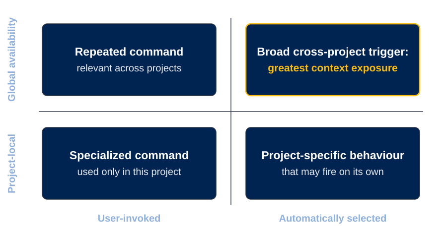
Trust is a prerequisite at any scope. After that, placement is contextual relevance.
Two different decisions hide in the word "install". Invocation mode: does it run only
when I ask, or can the model select it from its description? Installation scope: this
project only, or available across my projects and machines? A manual Skill can be
global; an automatic Skill can be project-only. They are not opposites; they are two
axes of the trigger surface. An untrusted Skill is installed at no scope. Once trust
and provenance clear, the placement question is: should this kind of chat know this
Skill exists, and is its likely value worth the context it adds? Global here means
available to me across projects; it does not mean group-shared or always running.
4 · Skills as maintained assets
Still the wild west
No settled practice: Skill sets, project instructions, file conventions all differ
Different arrangements really do produce different results
How we work now is not how we will work in a few years
My configuration is a starting point, not a standard. Keep the habit: decide what belongs in context, and change it as the tools change.
Coding with AI is still the wild west. People do not agree on the right Skills, the
right project instructions, or even the right shape for a Claude file. Friends at
large technology companies tell me practice differs department to department. (If I
name a company aloud, it is a personal anecdote from friends, not a statement of
official practice.)
The shelf itself hangs below this slide: I keep my maintained Skills in one
version-controlled repo, each project sees only the relevant subset, and I am making
that harness available to the group. Details in the drill-down.
So: I am showing you how I think about the problem, not handing you a canonical
configuration. If you understand context, trigger surface, intentional handoffs,
evidence, and ownership, you can change tools without losing the reasoning. That
sentence on the slide is the bridge to the last section: the part that must not
change hands.
(Down: the maintained shelf, then vocabulary.)
One shelf, under version control
Every Skill I maintain lives in one repo; each project checks out only its shelf
It helps generate new Skills tailored to a given project
It tracks which Skills are related, so an improvement to one is disseminated to the rest
Being opened to the group: a jumping-off point for a workflow of your own .
This is the housekeeping behind everything in this section. I use several computers
and many projects, and I do not want six slowly diverging copies of the same prompt.
So the Skills I maintain live in one version-controlled repo, and each project
exposes only the relevant shelf. That is how a refinement made in one place becomes
available everywhere, without putting every Skill in front of every chat.
Two things the repo does beyond storage. It helps me generate a new Skill tailored to
a given project, rather than starting from a blank page. And it tracks which Skills
are related, so when I make one better, say the interview Skill, the improvement can
be disseminated to its relatives instead of stranding old copies at their old ways.
It currently lives in a private repo; I am moving it into a public one for the group
to use. The offer: take it as a jumping-off point. Fork it, keep the ideas that fit
the way you work, replace the ones that do not, and grow a workflow that is yours.
You will see how I think about maintaining Skills in there, and that is the part
worth taking.
(Down: vocabulary.)
Vocabulary: Skills
Term In this talk Skill A discipline I repeat, packaged so the next chat does not rediscover it. Maintained, not collected. trigger surface Everything a chat can see that can cause behaviour. Every place a Skill is listed makes it larger. invocation mode Runs when I ask, versus selected by the model from its description. installation scope On one project's desk, or on every desk I own. A different axis from invocation.
Trigger surface is the load-bearing term: it is what turns "just install it" into a
real cost with real security implications.
5 · Ownership and validation
Less connected to their own writing
MECH 479, across course offerings:
AI as orientation → AI as critic → AI as end-to-end author → outer space
Rubric-shaped reports, produced very quickly
Weak answers to questions about their own cited sources
The assignment stopped guaranteeing that a polished deliverable reflected understanding. Redesign the checkpoints, not the blame.
Last section, and the one I care most about. Everything so far was workflow; this is
why the workflow exists. Many of us are hesitant about AI in scientific work because
mistakes matter; this section meets that hesitancy where it is, starting with what I
felt in my own classroom: this past year, students seemed less connected to the
writing of their own papers.
In an earlier year of my nanomaterials course, students were quite honest about where
they were. If someone had no entry into a paper, I might suggest AI for a first
summary; if they had a draft and were stuck, AI could critique and polish, with the
warning that clearer prose can distort the science. Bounded help.
In the more recent offering the models were better, and some students had delegated
the whole chain: finding papers, processing them, producing a rubric-shaped report.
Fast, polished, and when I asked substantive questions about one of the cited papers,
they could not answer well or judge which parts of their own report were correct. Not
one task delegated, but the chain of decisions that made the project theirs.
The lesson is not that the students were dishonest or that AI use is wrong. The
assignment no longer guaranteed that a polished deliverable reflected understanding,
so I have to rethink the checkpoints and the evidence of ownership in the course.
Same bridge to us: a finished program is not evidence that the researcher owns the
chain of decisions that produced it.
(This is an aggregate pattern across interactions; no individual student, no
misconduct determination.)
5 · Ownership and validation
Stay inside the epistemic loop
The point where I have delegated so many intermediate judgements that I can no longer audit, explain, or defend the result.
I call it outer space.
That accumulated loss of decisions has a name in this talk. "Outer space" is my own
name for the failure: enough intermediate judgement delegated that the human can no
longer audit, explain, or defend what came back. The classroom was the first rung.
Two more stories, escalating: a paragraph of my own writing, and a piece of working
code. Each artifact looks better than the last, and each one moved its author further
from the decisions that made it true or false.
5 · Ownership and validation
Better structure, wrong comparison
AI restructured my dipole paragraph. Genuinely better writing.
A > B became A < B
the shape of the error, not the sentence
I kept the structure and repaired the science. Possible only because I still knew what the sentence was supposed to say.
My own warning example, from my own writing. An AI pass made a paragraph about dipoles
much better structured, and somewhere in the rewrite it reversed a comparison:
effectively a greater-than became a less-than, and the sentence became scientifically
wrong. I kept the improved structure and repaired the relationship. I could do that
only because I still knew what the science was supposed to say. Greater fluency, one
reversed relationship: that is the second rung of the escalation. (I have not recovered
the original sentence, so I show the shape of the error, not a reconstruction.)
5 · Ownership and validation
Green tests can agree on the wrong physics
$5 \times 10^{12}\ \mathrm{Hz} \;=\; 5\ \mathrm{ps}^{-1}$
The Vineyard prefactor came out in $\mathrm{Hz}$; the rate layer consumed the number as $\mathrm{ps}^{-1}$
Every finite HTST rate 10¹² too large; simulated time 10¹² too short
The tests did not stop me. A value I already had reason to expect did.
The climax, from pyKMC. The Vineyard calculation produced the attempt frequency in
hertz. The rate layer and the KMC clock consume the prefactor in inverse picoseconds.
The initial backends passed the raw number straight through: five times ten to the
twelve hertz, consumed as five times ten to the twelve per picosecond. The prefactor
multiplies every finite HTST and RPA rate, so every rate was ten to the twelve too
large and simulated time ten to the twelve too short. Constant-style runs and the k0
fallback were untouched. The code ran smoothly.
And the tests were green, because they encoded the same mistaken contract: they
expected the raw hertz value as the resolved prefactor. Working code and green tests,
agreeing on the wrong physics.
What stopped me was none of that. I compared the result with a value I already had
reason to expect, and the discrepancy made me distrust the output. Following that
physical sanity check led us to the unit boundary. (I am deliberately not naming the
reference value or source.) Automated checks prove the contracts they encode; an
external scientific anchor can reveal that the encoded contract is itself wrong.
An honest history note: this work predates the design-interview Skill; it followed
parts of the practice, and it is the kind of hidden decision the current workflow is
built to surface, not proof the Skill would have prevented it.
(Down: the full unit boundary; the public evidence trail.)
The unit boundary, in full
$$\nu_0 \;=\; \frac{1}{2\pi\hbar}\,\frac{\prod_i \hbar\omega_i^{\mathrm{min}}}{\prod_j{}^{\prime} \hbar\omega_j^{\mathrm{saddle}}}$$
The primed saddle product omits the imaginary mode: one energy dimension survives, so $\nu_0$ carries units
The error multiplies every finite HTST and RPA rate; constant-style runs and the $k_0$ fallback were unaffected
The fix converts $\mathrm{Hz} \to \mathrm{ps}^{-1}$ exactly once, at the backend boundary, pinned by a Ni(100) regression against a known 5 THz prefactor
For the record: the minimum has one more positive mode than the saddle, which is why
the ratio keeps one energy dimension before division by two pi hbar. The recovered
contract became an explicit boundary helper, backend documentation, corrected test
expectations, and an end-to-end regression using the committed Ni(100) surface-hop
event, barrier about 0.597 eV, against the known 5 THz prefactor.
Cross-codebase caution: pylatkmc deliberately stores the prefactor in hertz,
evaluates rates in inverse seconds, and advances its clock in seconds. Converting
that prefactor to inverse picoseconds without changing its clock would introduce the
same factor-of-ten-to-the-twelve error in the opposite codebase. The lesson is the
explicit contract, not one particular unit.
Public evidence trail
github.com/hugomoison/pyKMC · verified 2026-07-13
Reference What it shows d705932Hz → ps⁻¹ converted exactly once, at the backend boundary d6b921fRegression: rate, residence time, constant-versus-HTST equivalence at the same prefactor PR 71 The historical HTST design record (a closed, unmerged draft)
The links verify the implementations. The disposable handoffs between them are my account.
Everything on this slide resolves publicly as of today. What public history verifies:
the boundary fix, the regression, and the closed draft design record (whose 48
passing tests belonged to the pre-correction unit convention; do not read it as the
final proof). What it does not verify: the temporary handoffs, and who or what made
the original implicit choice. I keep those labelled as my account.
Vocabulary: ownership
Term In this talk epistemic loop The chain of judgements you can still audit, explain, and defend. outer space My name for the far side: so much delegated that the result can no longer be defended. external anchor A value you already had reason to expect. It can catch what green tests encode wrongly. regression vs validation A pinned, machine-checkable expectation, versus an end-to-end confirmation run. Different strengths of evidence.
These four terms are the ownership section in miniature: know where your loop ends,
name the far side, keep an anchor outside the code, and be precise about what kind of
evidence each check gives you.
5 · Ownership and validation
Going from idea to implementation has never been easier
pylatkmc to-do Netrunner lotusfield
The turn. Everything so far in this section is the price of admission; this is what it
buys. Working this way, going from idea to implementation has never been easier, and
that is worth being excited about. The clip is Claude driving Blender over MCP: really
nice renders of a pyKMC event, quickly, instead of fighting a visualization package
into shape.
The icons are real, working software. pylatkmc: a fast lattice KMC that takes a Python
input and recompiles it in C. A to-do app that matches how I organize work, built in
one sitting; a YouTube video of that build is coming. An older card game brought back
to life, with an algorithmic opponent I used to train an ML player that genuinely
challenges me. And lotusfield, my own lean media streaming server, built because the
one I ran stopped fitting me.
The point of the whole section: the same loop that keeps the science honest is what
makes this speed safe to use. Stay inside it, and you can build nearly anything you
need.
5 · Ownership and validation
Delegate labour,
Explain the choices
Trace the evidence
Challenge the output
Say what observation would prove it wrong
Thank you. Questions?
The closing thought, rehearsed. With a workforce of eager interns you can carry out an
enormous amount of work: searching, drafting, wiring, testing, re-running. What you
want to make sure is that you stay connected to the work they are doing, so that your
scientific and engineering judgement and knowledge are used, and even expanded. I
should still be able to explain the choices, trace the evidence, challenge the output,
and say what observation would prove it wrong. If I can do those things, then I am
still in the loop, and I can learn along the way, even as the tools, and how the work
is done, change. Thank you.
("Connected" deliberately echoes the section opener: the students' failure was
disconnection. Chalkboard ready on B for Q&A sketches.)